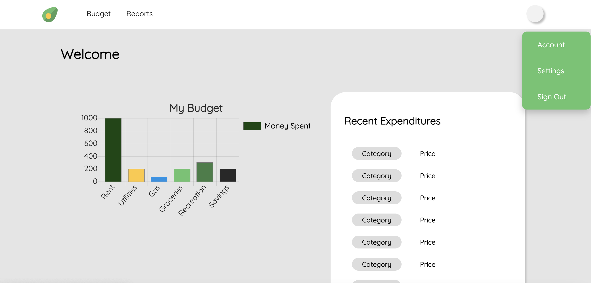

Palendar Pet Tracker
Built a pet health tracking app prototype using HTML, CSS, Bootstrap 4 & JS.
This app helps users keep up with the day to day needs of their pets by logging vet visits, exercise, and meal time. Pet owners can track goals (like increasing play time) and share information with anybody they'd like.
Budget Planning App
Developed and designed a budgeting app prototype in collaboration with a distributed team.
This was developed with the needs of college students in mind. Students can budget and view how others in their area spend their money based on data pulled from the internet.

Facebook Message Analysis Scripting (In Progress)
Developed using Python.
After converting your HTML message files into a .txt file, you can use this to analyze Facebook messages.